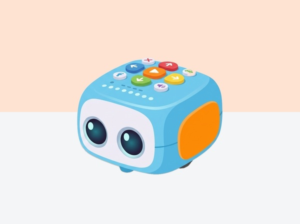

TaleBot
El robot narrador que parla, llegeix mapes interactius i dibuixa
TaleBot Pro és un robot tangible pensat per desenvolupar el pensament computacional, el llenguatge oral i la creativitat. Reconeix mapes temàtics mitjançant un sensor òptic OID, permet enregistrar la pròpia veu a cada casella i dibuixa figures geomètriques amb retoladors.
Un mapa que convida a explicar
Tale-Bot Pro dona al grup un punt de partida per unir seqüències de moviment, llenguatge oral, orientació en una quadrícula i narració. Mantingues la història en mans dels infants: el robot és un personatge més, no qui decideix com acaba.
Organització de la sessió
- Col·loca el mapa sobre una superfície plana i acorda on comencen i acaben les ordres.
- En una primera ronda, l'alumnat mou un marcador sobre el paper mentre una persona llegeix les ordres.
- Quan el pla queda clar, traslladeu-lo als botons del robot i feu una prova curta.
- Canvieu els rols de narrador, programador i observador abans de revisar la història.
Preguntes que ajuden a seqüenciar
«Què ha de passar abans que el personatge arribi aquí?», «quantes ordres es repeteixen?» i «què canviaries perquè la història tingui un altre final?» permeten parlar d'algorismes sense perdre la narrativa.
Les ordres físiques, la seqüenciació, els bucles, els indicadors de color i l'enregistrament de veu depenen del model. Confirma quina versió tens i no enregistres cap veu sense acordar-ho amb els infants i el centre. Informació oficial de Tale-Bot Pro.
Recursos oficials del fabricant
Per consultar materials, compatibilitat i instruccions actualitzades. Les activitats de Robòtica200 són adaptacions pròpies.
- Curs oficial de Tale-Bot ProÚs del robot, targetes d’activitat i disseny de propostes pròpies.
- Catàleg d’activitats de MatatalabFiltra les activitats i comprova per a quin producte s’han dissenyat.
Tutorials de TaleBot
Tutorials pas a pas pensats per a l'ús directe a l'aula.
Primeres passes: Botons direccionals i la tecla Delete
Descobrir els comandaments bàsics de TaleBot, la mesura del seu pas (10 cm) i la importància de buidar la memòria.
Reconeixement i enregistrament de veu
Gravar pistes d'àudio i diàlegs personalitzats amb la veu de l'alumnat a cada etapa del recorregut.
Motors i sensors: Dibuix geomètric amb retoladors
Inserir dos retoladors a les ales de TaleBot per traçar formes geomètriques de colors exactes sobre paper continu.